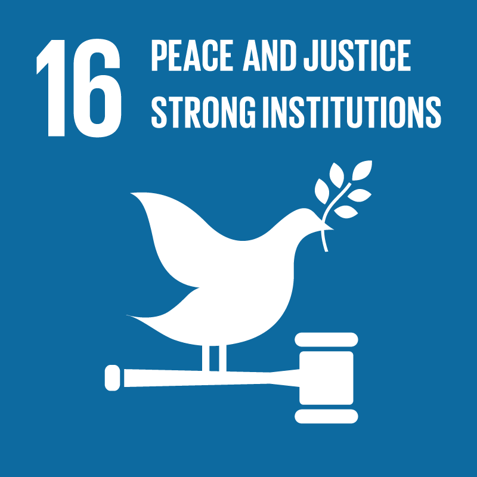
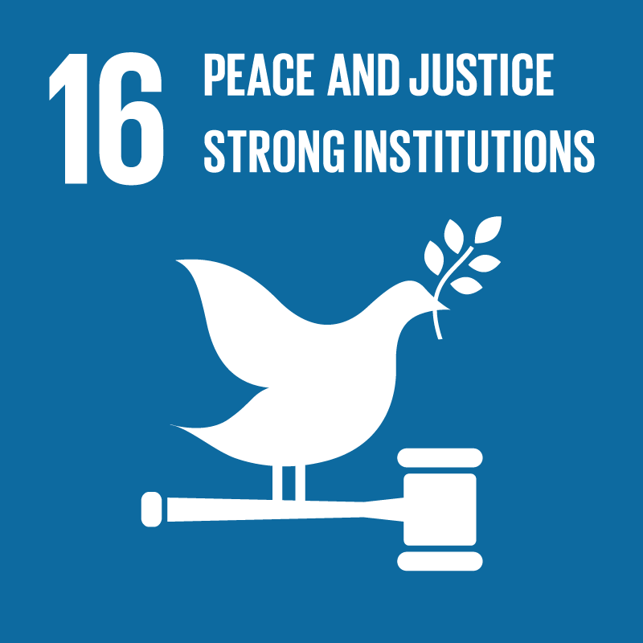

På FN topmødet i New York i 2015 vedtog verdens stats- og regeringsledere en hidtil uset ambitiøs og samfundsforandrende udviklingsdagsorden, også kaldt 2030 dagsordenen.
Frem til 2030 skal denne dagsorden sætte kurs mod en mere bæredygtig udvikling for både mennesker og planeten, vi bor på.


 
